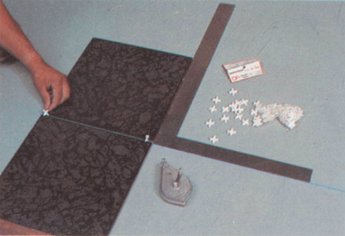
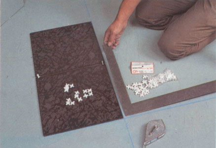
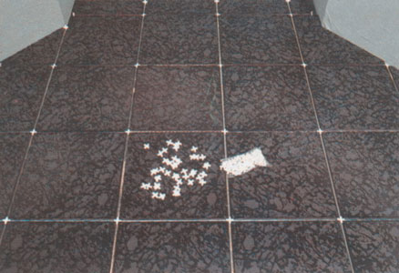

Ceramic Tile

Step 1
Using two tiles the direction that will take the floor is chosen, using 2 spacers vertically to give the desired separation. (In this case 1⁄4") separators were used.

Step 2
The first line of the set square is marked.

Step 3
The second line of the set square is marked.

Step 4
The final set square is obtained.

Step 5
The mortar adhesive spreads using a dented tile tool.

Step 6
The next piece of tile is set

Step 7
Se usa un separador en forma vertical para alinear la parte superior derecha de la pieza a pegar con la pieza superior vecina.

Step 8
The vertical separator that had been used to align a previous piece is pushed horizontally at the intersection of the 3 pieces resulting in the lower left part of the newly installed piece, leaving the preparation for the next piece, and aligning while the newly installed part with the piece to the left.

Step 9
A final pressure of the installed piece is made and continues with step 6, 7 and 8 to finish installing.

Step 10
Final stage before grounting.

Step 11
After removing the spacers grount achieving a proper fit. (For separators over 1⁄8" you can grount with colored sand, which completely seals and prevents cracks.